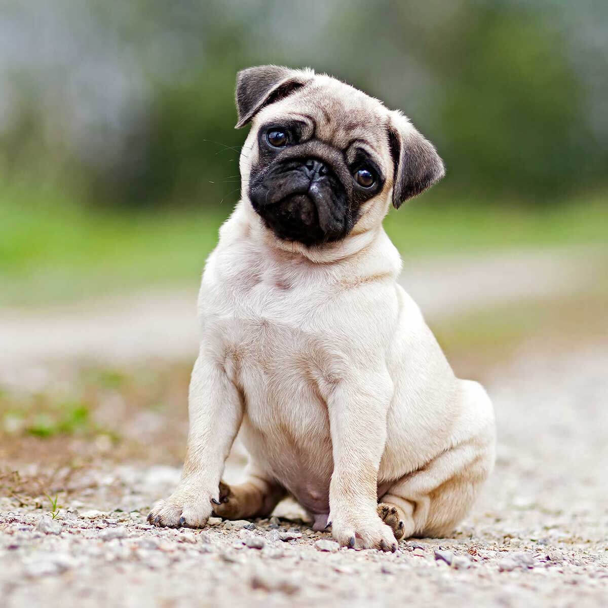

| IMAGE |
DOG BREED |
CHARACTERISTICS |
|  |
Pug |
a companion and a pleasure to his owners. He has an even and stable temperament, great charm, and an outgoing, loving disposition. Pugs live to please their people, so they are generally easy to train. |
 |
Shiba Inu |
A muscular dog, it stands 13.5 to 16.5 inches (34 to 42 cm) tall at the shoulders and weighs 17 to 23 pounds (7.5 to 10.5 kg). The Shiba Inu is known for its confidence, perkiness, and triangularly set eyes |
 |
Basset Hound |
is a friendly, easygoing dog. Originally hunting in packs, they tend to be good with other dogs and other pets in general. Bassets are people oriented and get along well with children. Fairly smart dogs |